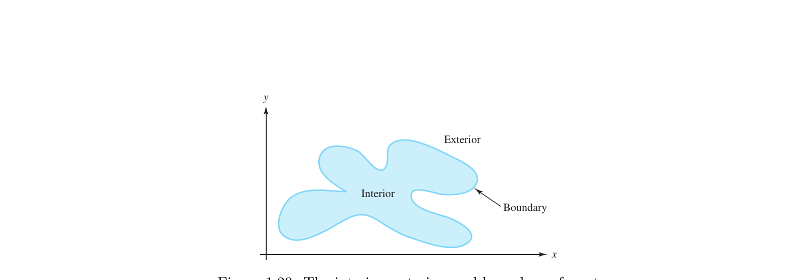

272 Edge of a Domain
A set of elements that surrounds a domain as its lower-dimensional edge that is used to evaluate a definite integral of a mapping along that edge.
Note: Also called boundary. Also called perimeter of a surface.
definition [d] (Edge of a Domain = Boundary = \(\partial D\)) From Emam: an open manifold is surrounded by a boundary, which is itself a manifold of dimension one less. A surface such as a plane is surrounded by a curve called the edge. The boundary of a manifold \(M^{n}\) is written
- \(\partial M^{n} = M^{n-1}\) .
where
- \(M^{n}\) is an \(n\)-dimensional manifold.
- \(\partial M^{n}\) is its edge.
- a closed manifold such as a circle or a sphere has empty boundary, written \(\partial M = 0\) in Emam’s notation.
definition [d] (Edge of a Domain = Boundary = Perimeter) From Arfken and Griffiths, in the setting of integral theorems: if \(R\) is a region of integration of dimension \(p\), then \(R\) has a boundary denoted \(\partial R\) of dimension \(p-1\). For a surface, the edge is the perimeter bounding the surface. For a volume, the edge is the surface that bounds the volume.
where
- \(R\) is the domain of integration.
- \(\partial R\) is the edge of the domain.
- for Stokes’ theorem on a surface patch \(S\), the edge is the perimeter \(P\) of the patch.
definition [d] (Edge of a Domain = Manifold Boundary) From Lee: if \(M\) is an \(n\)-manifold with boundary, a point \(p \in M\) is a boundary point of \(M\) if it is in the domain of a boundary chart that takes \(p\) to \(\partial \mathbb{H}^{n}\). The boundary of \(M\), denoted \(\partial M\), is the set of all its boundary points.
where
- \(M\) is an \(n\)-manifold with boundary.
- \(\partial M\) is the edge of \(M\).
- \(\mathbb{H}^{n}\) is the closed upper half-space.
272.1 Examples
example 1 [d] (Upper half-space — Lee, Introduction to Smooth Manifolds) Verbatim from the source: the closed \(n\)-dimensional upper half-space \(\mathbb{H}^{n} \subset \mathbb{R}^{n}\) is defined as
- \(\mathbb{H}^{n} = \{ (x_{1},\ldots,x_{n}) \in \mathbb{R}^{n} : x_{n} \ge 0 \}\) .
When \(n > 0\),
- \(\operatorname{Int} \mathbb{H}^{n} = \{ (x_{1},\ldots,x_{n}) \in \mathbb{R}^{n} : x_{n} > 0 \}\)
- \(\partial \mathbb{H}^{n} = \{ (x_{1},\ldots,x_{n}) \in \mathbb{R}^{n} : x_{n} = 0 \}\) .
where
- \(\mathbb{H}^{n}\) is the domain in this example.
- \(\partial \mathbb{H}^{n}\) is the edge of that domain.
- \(\operatorname{Int} \mathbb{H}^{n}\) is the set of interior points of \(\mathbb{H}^{n}\).
- \((x_{1},\ldots,x_{n})\) is a point of \(\mathbb{R}^{n}\).
- \(x_{n}\) is a real number.
- \(n\) is a natural number with \(n > 0\).
example 2 [d] (Open unit disc — Rudin, Real and Complex Analysis) Verbatim from the source:
- \(D(a;r) = \{ z : |z - a| < r \}\) is the open circular disc with center at \(a\) and radius \(r\).
- The open unit disc \(D(0;1)\) is denoted by \(U\).
- The unit circle, the boundary of \(U\) in the complex plane, is denoted by \(T\).
- \(T := \{ z \in \mathbb{C} : |z| = 1 \}\) .
where
- \(U = D(0;1)\) is the domain.
- \(T = \partial U\) is the edge of that domain.
- \(z\) is a complex number.
- \(a\) is a complex number.
- \(r\) is a positive real number.
- \(|z - a|\) is the distance from \(z\) to \(a\).

Figure 1.29 from Howell and Mathews shows a domain as a shaded interior, its edge as the labeled boundary curve, and the complementary exterior of the set.
272.2 Elementary Example
272.2.1 Simple
The edge \(\partial D\) is the lower-dimensional set surrounding a domain \(D\).
\[ D = \{ a,\ b,\ c,\ d \} \]
\[ \partial D = \{ x,\ y,\ z \} \]
where
- \(D\) is the domain.
- \(\partial D\) is the edge of \(D\).
272.2.2 General
For the open unit disc, the domain is the open set of radii less than \(1\), and the edge is the unit circle.
\[ U = \{ z \in \mathbb{C} : |z| < 1 \} \]
\[ T = \partial U = \{ z \in \mathbb{C} : |z| = 1 \} \]
where
- \(U\) is the open unit disc.
- \(T\) is the unit circle, the edge of \(U\).
- \(|z|\) is the modulus of the complex number \(z\).
272.3 Historical Notes
The symbol \(\partial\) was introduced by Carl Gustav Jacob Jacobi in the 1820s for partial derivatives, replacing an earlier upright \(d\) in that role. The same glyph was later used for the boundary of a domain or manifold, written \(\partial D\) or \(\partial M\).
Emam explains the notation choice by an intuitive differentiation analogy: the volume of a ball of radius \(r\) is \(\dfrac{4}{3}\pi r^{3}\), and the area of its bounding sphere is \(4\pi r^{2}\), which is the derivative of that volume with respect to \(r\). One therefore writes the bounding surface as related to the solid by differentiation, suggesting \(M^{2} = \partial M^{3}\). Emam stresses that this example is not to be taken literally, but that it explains the origins of using a derivative symbol for the relation between a manifold and its edge. He also notes that \(\partial\) is treated as a nilpotent operator, with \(\partial^{2} = 0\).
In the setting of Stokes’s theorem, the Princeton Companion records that \(\int_{S} d\omega = \int_{\partial S} \omega\), and that one may view differentiation \(\omega \mapsto d\omega\) as the adjoint of the boundary operation. Frankel likewise remarks that \(\partial^{2} = 0\) mirrors \(d^{2} = 0\) for differential forms. Historically, Betti in the 1870s and Poincaré in Analysis situs (1895) developed the systematic use of boundaries to detect holes, leading to the modern boundary operator on chains.
272.4 References
- Emam, M. H. Covariant Physics. Oxford University Press, 2021. — boundary as edge of an open manifold; \(\partial M^{n} = M^{n-1}\); why \(\partial\) is used as a derivative-like symbol; \(\partial^{2}=0\).
- Arfken, G. B., Weber, H. J., & Harris, F. E. Mathematical Methods for Physicists, 7th ed. — perimeter bounding a surface; \(\partial R\) of dimension \(p-1\).
- Griffiths, D. J. Introduction to Electrodynamics. Cambridge University Press, 2024. — perimeter of a surface patch; soap-film wire-loop boundary.
- Lee, J. M. Introduction to Topological Manifolds. Springer. — manifold boundary \(\partial M\).
- Lee, J. M. Introduction to Smooth Manifolds. Springer, 2013. — \(\mathbb{H}^{n}\) and \(\partial \mathbb{H}^{n}\) as sets.
- Rudin, W. Real and Complex Analysis. McGraw-Hill, 1987. — open unit disc \(U\) with boundary \(T\).
- Waters, T. The Four Corners of Mathematics. A K Peters / CRC Press, 2024. — Jacobi introduces \(\partial\) for partial derivatives in the 1820s; Betti and Poincaré on boundaries.
- Gowers, T., Barrow-Green, J., & Leader, I. (eds.). The Princeton Companion to Mathematics. Princeton University Press, 2008. — Stokes: differentiation as adjoint of the boundary operation.
- Frankel, T. The Geometry of Physics. Cambridge University Press. — \(\partial^{2}=0\) analogous to \(d^{2}=0\).
- Howell, R. W., & Mathews, J. H. Complex Analysis. https://complexanalysis.org/howell-complex-analysis-web.pdf — Figure 1.29, interior, exterior, and boundary of a set.
- Alternating Function
- Alternating k-linear function
- Boundary Operation
- Bundle
- Cartesian Product
- Constant Metric Tensor
- Contravariant Rank
- Covariant Rank
- Covariant, Contravariant, and Coordinate Systems
- Differential Forms
- Differential k-Form
- Edge of a Domain
- Exterior Algebra and Exterior Derivatives
- Forms
- Functions
- Inverse Metric
- k-Covector
- k-Covector Field
- k-Fold Product
- k-form
- k-Tensor
- Lie
- Lie Algebra
- Line Element
- Linear Functional
- Lorentzian Manifold
- Metric Tensor
- Multilinear Function
- Nondegenerate
- Nondegenerate Bilinear Form
- One-Form
- Smooth
- Smooth Assignment
- Smooth Mapping
- Stoke’s Theorem and the Fundamental Theorem of Calculus
- Symmetric Array
- Tangent Space
- Tensor Field
- Tensors
- Two-Form
- Type-(0,2) Tensor Field
- Type-(q,r) Tensor